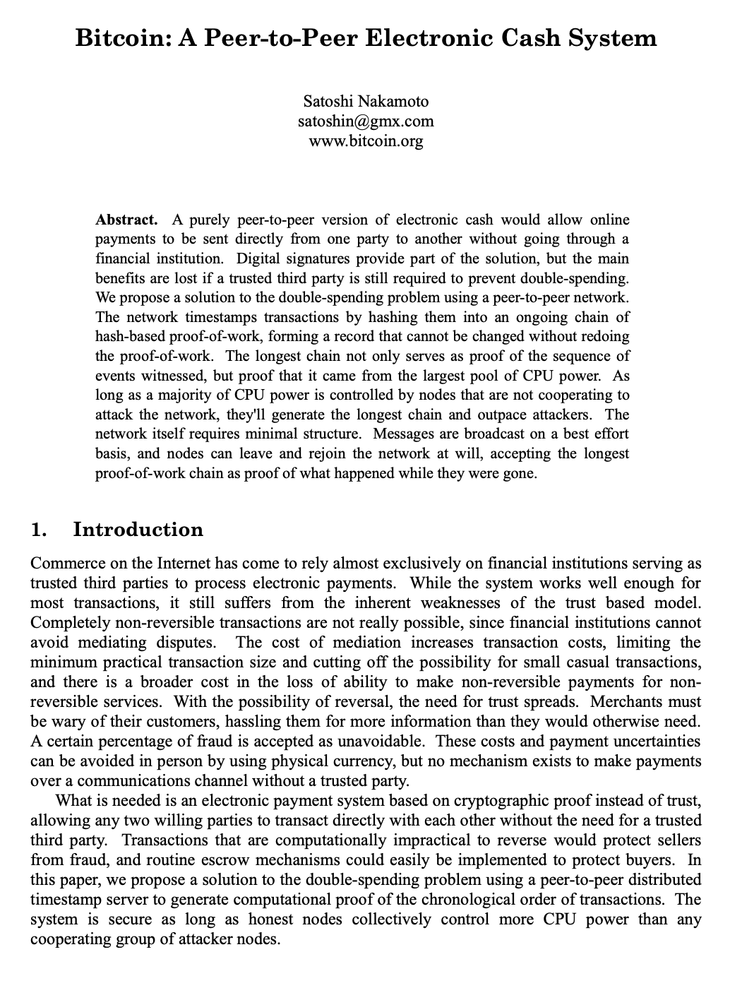

How to explain Bitcoin Whitepaper to a 8 year old kid - Part 1

💰 Bitcoin: A Peer-to-Peer Electronic Cash System (Explained for Kids — how Satoshi's idea started it all)
The Story of Satoshi and the Dream of Digital Money
Once upon a time, there was a mysterious inventor named Satoshi Nakamoto. Satoshi wanted to solve a big problem: "How can people send money to each other online without banks or middlemen?"
At that time, if you wanted to pay someone on the internet, you had to go through a bank, PayPal, or some other trusted company. Those companies kept the records and made sure you didn't spend the same dollar twice. But they also charged fees, sometimes reversed payments, and could block people they didn't like.
Satoshi thought: "What if we could make digital cash — money that works online, but is as direct and final as handing someone a coin in person?"
The Problem: Double Spending
When you send an email, you don't lose the original — you just make a copy. That's fine for messages, but terrible for money! If digital money worked like email, people could just copy their coins and spend them twice — or a hundred times!
That's called the double-spending problem. Before Bitcoin, the only way to prevent that was to have a trusted central server (like a bank) that checked and approved every transaction. But Satoshi wanted a system with no central boss — a system where everyone could check each other's work.
The Solution: Cryptographic Proof
Satoshi used cryptography — fancy math that locks information like a digital safe — to create a new kind of record book, shared by everyone in the network. Each time someone sends money, that transaction is written into a block, and every block is chained to the one before it. That's why it's called a blockchain!
In short:
- 🪙 Bitcoin is digital cash that works without banks.
- 🔒 It uses cryptography to make money safe and uncopyable.
- ⛏️ Miners add transactions into chained blocks using "proof-of-work."
- ⛓️ The longest chain is the true history.
- 💻 Anyone can join or leave — no permission needed!
P.S. The content was assisted by AI